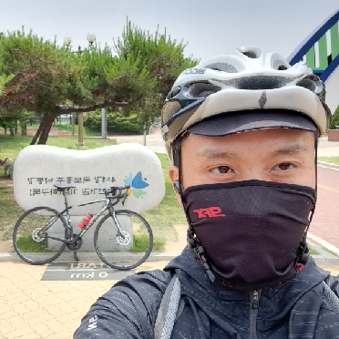

MONTHLY · BY SPORT

RUN✦RIDE✦SWIM✦TRIATHLON✦TRAIL✦BREVET✦JOURNEY✦RUN✦RIDE✦SWIM✦TRIATHLON✦TRAIL✦BREVET✦JOURNEY✦
01 / SEASON
숫자로 보는 한 해
Strava 활동을 한국 시간 기준으로 집계했습니다. 지표를 바꾸면 모든 그래프가 함께 바뀝니다.
SHARE
종목 비중
CUMULATIVE · 2025 vs 2026
누적 추이 비교
CONSISTENCY
꾸준함 지도
02 / RACES
기억에 남은 대회
타임라인의 점이나 카드를 누르면 기록, 구간 분석, 경로와 사진을 볼 수 있습니다.
03 / JOURNEYS
경기 밖의 이동
여러 날에 걸친 여행과 장거리 도전을 하나의 여정으로 묶었습니다.
04 / REVIEW